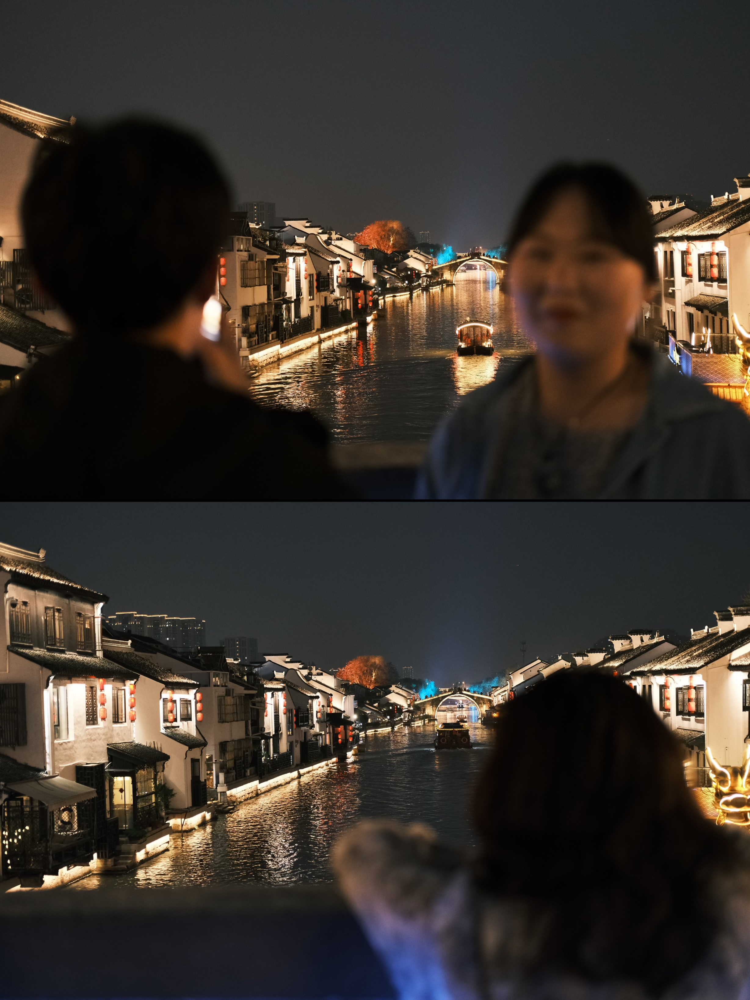
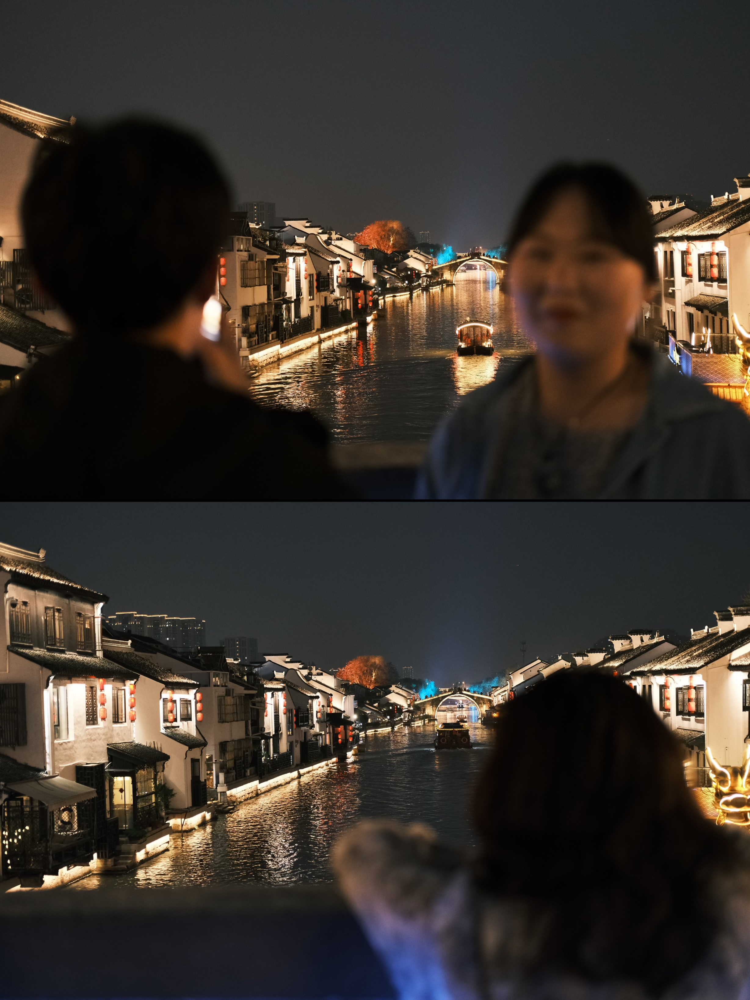

hello hello~
看到这里希望你天天开心💗
看到这里希望你天天开心💗
你可以叫我
小汪 / 阿仔 / 曼子 / 汪总 / …
简单介绍自己
ecnu | 02 研一 | i ( e ？) nfj
七分乐观主义
三分浪漫主义
爱美食 / 爱睡觉 / 爱旅游
努力收集地球🌏碎片
摄影 / 跳舞 / 空手道
打球 (目前只会羽毛球🏸)
古筝 / 钢琴 / 滑雪
…
喜欢记录 / 美好见证官
希望和大家成为好朋友 👩🏻🤝👩🏻
小汪的旅行 ✈ ：
重庆 - 南京 - 青岛 - 无锡 - 苏州 - 西安 -
成都 - 都江堰 - 九寨沟 - 阿坝藏族羌族自治区 -
北京 - 哈尔滨 - 长白山 - 延吉- 合肥 - 安庆 -
池州 - 上海 - 昆明 - 大理 - 丽江 - 无锡
📍 上海
📍 长白山


📍 延吉

📍 哈尔滨

在圣索非亚大教堂来了个全家福（还有四个人的就不发了。。）
📍 西安
西安真的是”碳水天堂“，好多好吃的biangbiang面
这个是鼓楼还是钟楼来着？？
📍 苏州


我们四个笨蛋早上赶高铁，应该是合肥站，跑到合肥南站，因为想要留个纪念，打印了纸质车票，所以没办法改签，匆匆忙忙赶高铁，检票的时候寝室长的身份证又丢了，哈哈哈哈，真是状况百出。
好想她们~😎（娃娃祺在北京、江子在芜湖、寝室长在合肥）
📍 南京
好喜欢串烧环节,回去发现手机里面录得全部都是我的声音 ”你就像天外来物一样 求之不得“
📍 成都
”和我在成都的街头走一走，
直到所有的灯都熄灭了也不停留“
喜欢晚上去小酒馆，听着民谣，喝点小酒，微醺
📍 四姑娘山
📍 都江堰
📍 重庆
谢谢朱哥带我和娄哥去重庆开会，还加上了之前的初中同学，请我吃火锅！！
还是要勇敢一点！
📍 合肥


📍 天柱山
📍 北京
📍 无锡
 

END :
小 汪 的 旅 行 还 在 继 续 ~